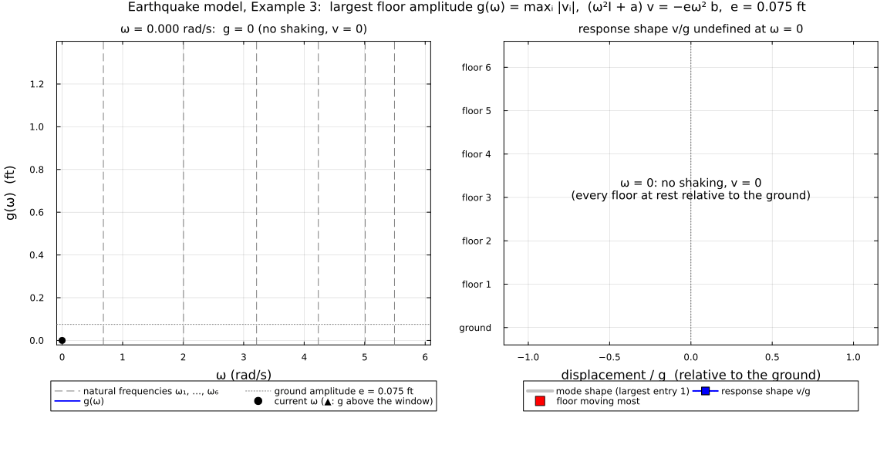

Earthquake Model
Source inspiration: (Mathew 2000-2019).
Description
A building of \(n\) floors is modelled as a chain of \(n\) equal masses \(m\) joined by horizontal springs of stiffness \(k\): the first floor is tied to the ground, each floor to the floor above it, and the top floor only to the floor below. If \(x_i(t)\) is the sideways displacement of floor \(i\) relative to the ground, the free vibrations of the building satisfy the linear system \(\mathbf{X}'' = \mathbf{a}\mathbf{X}\), where \(\mathbf{a} = \tfrac{k}{m}\,\mathbf{T}\) and \(\mathbf{T}\) is a tridiagonal matrix. Each eigenvalue \(\lambda\) of \(\mathbf{a}\) is negative and gives a natural frequency \(\omega = \sqrt{-\lambda}\) and a natural period \(P = 2\pi/\omega\) of the building. Computing them is an eigenvalue problem.
An earthquake that shakes the ground back and forth as \(e\cos(\omega t)\) adds the same inertial force to every floor, and the system becomes \(\mathbf{X}'' = \mathbf{a}\mathbf{X} + e\,\omega^2\cos(\omega t)\,\mathbf{b}\) with \(\mathbf{b} = (1, 1, \ldots, 1)^{T}\). It has the forced solution \(\mathbf{X}(t) = \mathbf{v}\cos(\omega t)\), whose amplitude vector solves an \(n \times n\) linear system:
\[ \bigl(\omega^2\mathbf{I} + \mathbf{a}\bigr)\,\mathbf{v} = -e\,\omega^2\,\mathbf{b}. \]
The matrix is singular exactly when \(\omega\) equals a natural frequency, so the amplitudes blow up there: resonance. Mathews’ module, which follows a six-floor building through three examples, computes the six natural frequencies and periods, solves for the floor amplitudes at one shaking frequency, and then plots the largest amplitude \(\max_i |v_i|\) against the frequency and against the period of the earthquake. Every number below has been recomputed independently.
Animations
Mathews’ module links no animation, and his animation archive has none for the earthquake model, so all four animations below are new, with no Mathews original. They animate his three examples for the six-floor building of Example 1 (\(k/m = 8\)), using his parameters: in Cases 1 to 3 the earthquake of amplitude \(e = 0.075\) ft, and, where they are needed, the natural frequencies \(\omega_j\) and mode shapes from the closed form of the theorem.
Case 1 is Example 2, the building shaken at \(\omega = 2.1\) rad/s, in two panels on one clock. The right panel is Mathews’ plot, grown in time: floor \(i\) at \(x = i + X_i(t)\) for \(0 \le t \le 10\) s, with time on the vertical axis, the rest lines \(x = 1, \ldots, 6\) and his colours (Blue, Red, Brown, Magenta, Green and Orange for floors 1 to 6, with his Green and Cyan darkened for legibility); his horizontal range was chosen automatically, and the panel uses \(0.5 \le x \le 6.5\), which holds every curve. The left panel is new. It draws the building itself in fixed coordinates, where the ground is at \(e\cos(\omega t)\) and floor \(i\) at \(e\cos(\omega t) + X_i(t) = (v_i + e)\cos(\omega t)\); the gray bars show how far each level swings, and the floors keep Mathews’ colours. Both panels show the forced solution \(\mathbf{X}(t) = \mathbf{v}\cos(\omega t)\), which is the motion when \(\mathbf{X}(0) = \mathbf{v}\) and \(\mathbf{X}'(0) = \mathbf{0}\), as the warning in the forcing section explains.
Case 2 is Example 3, one frame per frequency \(\omega = 0, 0.025, \ldots, 6\) rad/s. On the left, Mathews’ graph of the largest amplitude \(g(\omega)\) over his interval \(0 \le \omega \le 6\), in his Blue, is traced up to the current \(\omega\), with the six natural frequencies as dashed asymptotes and the curve broken at each of them; the vertical range \(0 \le g \le 1.4\) ft is close to the automatic range of his plot. Near a resonance \(g\) is above the window: the curve leaves the top edge, and the current point is drawn as a triangle on the edge, with its true value in the title. The right panel is new. It shows the response shape \(\mathbf{v}/g\), the floor amplitudes divided by the largest one, so that the floor that moves most (red) sits at \(\pm 1\), beside the mode shape of the natural frequency nearest to \(\omega\) (gray, scaled to largest entry \(1\) and signed to match \(\mathbf{v}\)), and its title gives the largest difference between the two shapes.
Case 3 is the second half of Example 3: \(g\) against the period \(p = 2\pi/\omega\) of the earthquake, traced as \(p\) grows, one frame per \(p = 0.65, 0.70, \ldots, 11\) s. The two panels are Mathews’ two period graphs, with his parameter ranges, windows and colours: \(0.5 \le \omega \le 10\) in the window \(0 \le p \le 11\), \(0 \le g \le 3\) (Orange), and \(1.5 \le \omega \le 10\) in the window \(0 \le p \le 4\), \(0 \le g \le 2\) (Red). The dashed lines are the natural periods \(P_j\), the dotted line is \(g = 0.3\) ft, four times the ground amplitude, and the periods where \(g \ge 0.3\) ft, the bands of the table in Example 3, are shaded as the trace passes them (their edges found by bisection). A point above a window is drawn as in Case 2.
Case 4 animates Example 1: the six natural modes, each the free vibration \(\mathbf{X}(t) = \mathbf{u}_j\cos(\omega_j t)\) of the building with no earthquake, all on one clock for one fundamental period \(P_1 = 9.215\) s, one frame per \(P_1/96\). The amplitude of a free vibration is arbitrary, so each mode shape is scaled so that its largest entry is \(1\), with floor 1 displaced to the right at \(t = 0\) (Example 1’s table scales floor 1 to \(1\) instead).
Every example of the module is animated. Not animated are the parts of the module with nothing to compute (the derivation of the model, the link to an old lab project, which is not in the archive, and the bibliography page) and, from this page, the motion of a building that starts at rest, described in the warning on the forced solution.
Julia source scripts that generated these animations are linked under each case.
Case 1 — Example 2: the building swaying at \(\omega = 2.1\) rad/s, \(e = 0.075\) ft, \(\mathbf{X}(t) = \mathbf{v}\cos(2.1t)\), \(0 \le t \le 10\) s
Behavior: Every floor swings with the period of the earthquake, \(2\pi/2.1 = 2.992\) s, so each of Mathews’ curves makes \(3.342\) oscillations in his ten seconds. Relative to the ground (right) floors 1 to 4 swing one way while floors 5 and 6 swing the other, the second floor farthest (\(0.3884\) ft) and the fifth least (\(0.06094\) ft), the amplitudes of Example 2. In fixed coordinates (left) the ground, \(0.075\) ft each way, moves with floors 5 and 6 and against floors 1 to 4, so the columns cross the rest line twice, between the ground and floor 1 and between floors 4 and 5. There the second floor still swings farthest, \(|v_2 + e| = 0.3134\) ft, \(4.179\) times as far as the ground, followed by the top floor, \(0.3029\) ft, and the fourth floor least, \(0.1060\) ft.

Case 2 — Example 3: sweeping the frequency, \(g(\omega) = \max_i \lvert v_i \rvert\) for \(\omega = 0, 0.025, \ldots, 6\) rad/s, \(e = 0.075\) ft
Behavior: At \(\omega = 0\) there is no shaking and \(g = 0\). Below the first natural frequency every \(v_i\) is positive, so the floors swing with the ground, and the top floor moves most; for slow shaking the response shape is the static shape \((6, 11, 15, 18, 20, 21)/21\) of Example 3: at \(\omega = 0.025\) the two agree within \(10^{-4}\), and the largest difference from the first mode shape is \(0.0556\). Approaching each natural frequency, \(g\) leaves the window and the response shape closes in on the mode shape: at the frame nearest \(\omega_j\) the largest difference is \(0.00122\), \(0.0283\), \(0.0721\), \(0.0635\), \(0.099\) and \(0.146\) for \(j = 1, \ldots, 6\). Across each \(\omega_j\) the shape flips sign against the mode shape, which is why the gray curve changes side. Nine frames have \(g\) above the window: the two frames either side of \(\omega_1\), \(\omega_2\), \(\omega_3\) and \(\omega_4\), and \(\omega = 5\) just below \(\omega_5\); the sixth resonance is the narrowest, and the frames either side of it, \(\omega = 5.475\) and \(5.5\), give \(g = 0.5149\) and \(1.099\) ft, inside the window. Between resonances the shape is a mixture of modes; at Example 2’s \(\omega = 2.1\), \(g = 0.3884\) ft on the second floor and the shape differs from the second mode shape by \(0.355\). Past \(\omega_6\), \(g\) falls to \(0.1125\) ft at \(\omega = 6\), where the first floor moves most and every \(v_i\) is negative (\(v_i/g\) between \(-1\) and \(-0.5004\)), so relative to the ground every floor swings against the ground’s motion; in fixed coordinates every floor moves less than half as far as the ground, from \(0.4998e\) on the first floor down to \(0.0078e\) on the top, on the way to the limit \(\mathbf{v} \to -e\,\mathbf{b}\) of Example 3, where the building stands still.

Case 3 — Example 3: the largest amplitude against the period, \(p = 2\pi/\omega\) from \(0.65\) to \(11\) s, \(e = 0.075\) ft
Behavior: The trace starts at \(p = 0.65\) s with \(g = 0.08283\) ft (Mathews’ curves start at \(p = 2\pi/10 = 0.6283\) s, where \(g = 0.08221\) ft) and meets the natural periods in increasing order, \(P_6 = 1.144\) s first and \(P_1 = 9.215\) s last, leaving the top of each window at every one. The shaded bands where \(g \ge 0.3\) ft are \(0.0145\), \(0.0335\), \(0.0633\), \(0.134\) and \(0.408\) s wide around \(P_6, \ldots, P_2\), and \(2.955\) s wide around \(P_1\), from \(7.600\) to \(10.55\) s: wider than the other five together. The right window holds the five short-period resonances, which crowd the left one. Example 2’s earthquake, with period \(2\pi/2.1 = 2.992\) s, lies in the band around \(P_2 = 3.132\) s. At \(p = 11\) s, the right edge of Mathews’ window, \(g = 0.2198\) ft.

Case 4 — Example 1: the six natural modes \(\mathbf{u}_j\cos(\omega_j t)\), \(0 \le t \le P_1 = 9.215\) s
Behavior: In mode \(j\) the floors change direction \(j - 1\) times going up the building: in mode 1 they all sway the same way, more the higher they are, and in mode 6 each floor moves against its neighbours. Each mode oscillates at its own natural frequency, from \(\omega_1 = 0.6819\) to \(\omega_6 = 5.492\) rad/s, so in the one fundamental period shown mode 1 makes one oscillation and returns to its start while mode \(j\) makes \(\omega_j/\omega_1\) of them: \(2.942\), \(4.713\), \(6.210\), \(7.346\) and \(8.055\) for \(j = 2, \ldots, 6\). The scaled entries of every mode are, apart from sign and order, the same six numbers \(\sin(m\pi/13)/\sin(6\pi/13) = 0.2411\), \(0.4681\), \(0.6680\), \(0.8290\), \(0.9419\) and \(1\) for \(m = 1, \ldots, 6\). The floor with the largest entry, the floor whose gray bar reaches \(\pm 1\), is floor 6, 2, 4, 1, 5 and 3 in modes 1 to 6: the floor that moves most as \(\omega \to \omega_j\) in Case 2 and in Example 3.

The Shear-Building Model
Equations of motion
Number the floors \(i = 1, \ldots, n\) from the bottom, and set \(x_0 = 0\) for the ground. The spring between floors \(i-1\) and \(i\) pulls floor \(i\) with force \(k(x_{i-1} - x_i)\), and the spring between floors \(i\) and \(i+1\) pulls it with force \(k(x_{i+1} - x_i)\), so the net force on floor \(i\) is
\[ k(x_{i-1} - x_i) + k(x_{i+1} - x_i) = k\,(x_{i+1} - 2x_i + x_{i-1}), \qquad i = 1, \ldots, n-1, \]
while the top floor has a spring below it only, and feels \(k(x_{n-1} - x_n)\). Newton’s second law \(m\,x_i'' = \text{force}\) for each floor gives the system
\[ \mathbf{X}'' = \mathbf{a}\,\mathbf{X} \tag{1} \]
For \(n\) floors of mass \(m\) and inter-floor stiffness \(k\),
\[ \mathbf{a} = \frac{k}{m} \begin{pmatrix} -2 & 1 & & & \\ 1 & -2 & 1 & & \\ & \ddots & \ddots & \ddots & \\ & & 1 & -2 & 1 \\ & & & 1 & -1 \end{pmatrix}, \tag{2} \]
an \(n \times n\) symmetric tridiagonal matrix whose last diagonal entry is \(-1\) instead of \(-2\) because the top floor has no floor above it.
Natural frequencies and modes
A solution of (1) in which every floor moves in step, \(\mathbf{X}(t) = \mathbf{u}\cos(\omega t)\), needs \(-\omega^2\mathbf{u} = \mathbf{a}\mathbf{u}\). So \(\mathbf{u}\) is an eigenvector of \(\mathbf{a}\) with eigenvalue \(\lambda = -\omega^2\), and
\[ \omega = \sqrt{-\lambda} = \sqrt{|\lambda|}, \qquad P = \frac{2\pi}{\omega}. \tag{3} \]
The eigenvector \(\mathbf{u}\) is the mode shape: the pattern of floor displacements that oscillates at that frequency.
For every \(n \ge 1\) and \(k, m > 0\), the matrix \(\mathbf{a}\) in (2) is symmetric and negative definite, since for every vector \(\mathbf{x} \ne \mathbf{0}\)
\[ \mathbf{x}^{T}\mathbf{a}\,\mathbf{x} = -\frac{k}{m}\Bigl(x_1^2 + \sum_{i=1}^{n-1}(x_{i+1} - x_i)^2\Bigr) < 0 . \]
Hence its \(n\) eigenvalues are real and negative, and the building has \(n\) real natural frequencies. For this particular matrix they are known in closed form:
\[ \lambda_j = -\frac{4k}{m}\sin^2\!\frac{(2j-1)\pi}{2(2n+1)}, \qquad \omega_j = 2\sqrt{\frac{k}{m}}\,\sin\frac{(2j-1)\pi}{2(2n+1)}, \qquad j = 1, \ldots, n, \]
with mode shapes \(u_i^{(j)} = \sin\dfrac{i(2j-1)\pi}{2n+1}\), \(i = 1, \ldots, n\). The \(\omega_j\) are distinct and increase with \(j\); \(\omega_1\) is the fundamental frequency.
The bracket in the quadratic form is zero only when \(x_1 = 0\) and every difference \(x_{i+1} - x_i\) is zero, that is, only when \(\mathbf{x} = \mathbf{0}\). Mathews computes the eigenvalues numerically; the closed form is a check on that computation.
Example 1 — natural frequencies and periods of a six-floor building
A building has \(n = 6\) floors, each of mass \(m = 1250\) slugs (a weight of \(1250 \times 32 = 40{,}000\) lb, or 20 tons, taking \(g = 32\) ft/s²), and the restoring force between floors is \(k = 10{,}000\) lb/ft \(= 5\) tons/ft. Find the eigenvalues of \(\mathbf{a}\), and the natural frequencies and periods of the building.
Step 1: The ratio \(k/m\) has units of \(\text{s}^{-2}\):
\[ \frac{k}{m} = \frac{10000}{1250} = 8, \qquad \mathbf{a} = \begin{pmatrix} -16 & 8 & 0 & 0 & 0 & 0 \\ 8 & -16 & 8 & 0 & 0 & 0 \\ 0 & 8 & -16 & 8 & 0 & 0 \\ 0 & 0 & 8 & -16 & 8 & 0 \\ 0 & 0 & 0 & 8 & -16 & 8 \\ 0 & 0 & 0 & 0 & 8 & -8 \end{pmatrix}. \]
Step 2: The eigenvalues of \(\mathbf{a}\), and the frequencies and periods from (3), are (to six significant figures)
| \(j\) | \(\lambda_j\) | \(\omega_j = \sqrt{\lvert\lambda_j\rvert}\) (rad/s) | \(P_j = 2\pi/\omega_j\) (s) |
|---|---|---|---|
| 1 | \(-0.464931\) | \(0.681858\) | \(9.21479\) |
| 2 | \(-4.02383\) | \(2.00595\) | \(3.13228\) |
| 3 | \(-10.3263\) | \(3.21346\) | \(1.95527\) |
| 4 | \(-17.9286\) | \(4.23422\) | \(1.48391\) |
| 5 | \(-25.0890\) | \(5.00890\) | \(1.25441\) |
| 6 | \(-30.1673\) | \(5.49248\) | \(1.14396\) |
Mathews prints the same values, in the opposite order (largest \(\lvert\lambda\rvert\) first). The slowest free oscillation of the building, the fundamental mode, has a period of \(9.21479\) seconds.
Step 3: The mode shapes, scaled so that the first floor moves one unit, are
| Mode \(j\) | Floor 1 | Floor 2 | Floor 3 | Floor 4 | Floor 5 | Floor 6 |
|---|---|---|---|---|---|---|
| 1 | \(1\) | \(1.9419\) | \(2.7709\) | \(3.4389\) | \(3.9070\) | \(4.1481\) |
| 2 | \(1\) | \(1.4970\) | \(1.2411\) | \(0.3609\) | \(-0.7008\) | \(-1.4100\) |
| 3 | \(1\) | \(0.7092\) | \(-0.4970\) | \(-1.0617\) | \(-0.2559\) | \(0.8802\) |
| 4 | \(1\) | \(-0.2411\) | \(-0.9419\) | \(0.4681\) | \(0.8290\) | \(-0.6680\) |
| 5 | \(1\) | \(-1.1361\) | \(0.2908\) | \(0.8058\) | \(-1.2062\) | \(0.5647\) |
| 6 | \(1\) | \(-1.7709\) | \(2.1361\) | \(-2.0120\) | \(1.4269\) | \(-0.5150\) |
In the fundamental mode all six floors sway the same way, more the higher they are; mode \(j\) changes sign \(j - 1\) times going up the building.
Verification: The closed form of the theorem with \(k/m = 8\) and \(n = 6\), \(\lambda_j = -32\sin^2\bigl((2j-1)\pi/26\bigr)\) and \(\omega_j = 4\sqrt{2}\,\sin\bigl((2j-1)\pi/26\bigr)\), agrees with a 40-digit numerical eigenvalue computation to all twelve digits compared, for every \(j\). For instance \(\lambda_1 = -32\sin^2(\pi/26) = -0.464930921\ldots\) and \(\omega_1 = 4\sqrt2\,\sin(\pi/26) = 0.681858432\ldots\). The closed-form mode shapes satisfy \(\mathbf{a}\mathbf{u} = \lambda\mathbf{u}\) to within \(1.5 \times 10^{-14}\).
Earthquake Forcing
The forced system
Suppose the ground moves sideways as \(e\cos(\omega t)\), with amplitude \(e\) and angular frequency \(\omega\). Keep \(x_i\) as the displacement of floor \(i\) relative to the ground, so floor \(i\) is at \(x_i + e\cos(\omega t)\) in fixed coordinates. The spring forces depend only on the differences \(x_{i+1} - x_i\) and on \(x_1\), the stretch of the bottom spring, so they are unchanged, but the acceleration of floor \(i\) is now \(x_i'' - e\,\omega^2\cos(\omega t)\). Newton’s law \(m\bigl(x_i'' - e\omega^2\cos\omega t\bigr) = \text{spring force}\) moves the ground acceleration to the right-hand side as a force \(f = m\,e\,\omega^2\cos(\omega t)\) on every floor, and dividing by \(m\),
\[ \mathbf{X}'' = \mathbf{a}\,\mathbf{X} + e\,\omega^2\cos(\omega t)\,\mathbf{b}, \qquad \mathbf{b} = (1, 1, \ldots, 1)^{T}. \tag{4} \]
The forced solution
Substituting \(\mathbf{X}(t) = \mathbf{v}\cos(\omega t)\) into (4) gives \(-\omega^2\mathbf{v} = \mathbf{a}\mathbf{v} + e\,\omega^2\mathbf{b}\), that is,
\[ \bigl(\omega^2\mathbf{I} + \mathbf{a}\bigr)\,\mathbf{v} = -e\,\omega^2\,\mathbf{b}, \qquad \mathbf{X}(t) = \mathbf{v}\cos(\omega t). \tag{5} \] Floor \(i\) swings with amplitude \(\lvert v_i \rvert\) relative to the ground.
Mathews’ module writes the system as \((\omega^2\mathbf{I} - \mathbf{a})\mathbf{v} = -e\omega^2\mathbf{b}\), but his Mathematica code builds the matrix \(\omega^2\mathbf{I} + \mathbf{a}\), which is what (4) gives, and all his numbers come from that matrix. With \(\omega^2\mathbf{I} - \mathbf{a}\), whose eigenvalues \(\omega^2 + \omega_j^2\) are all positive, there would be no resonance, and Example 2 would give a largest amplitude of \(0.0736\) ft instead of \(0.388\) ft.
If \(\mathbf{u}_1, \ldots, \mathbf{u}_n\) are orthonormal eigenvectors of \(\mathbf{a}\), the matrix \(\omega^2\mathbf{I} + \mathbf{a}\) has eigenvalues \(\omega^2 - \omega_j^2\) for the same eigenvectors, and the solution of (5) is
\[ \mathbf{v} = -e\,\omega^2\sum_{j=1}^{n}\frac{\mathbf{u}_j^{T}\mathbf{b}}{\omega^2 - \omega_j^2}\,\mathbf{u}_j . \tag{6} \]
The system is singular exactly when \(\omega\) equals a natural frequency \(\omega_j\). As \(\omega \to \omega_j\) the \(j\)-th term grows without bound, unless \(\mathbf{u}_j^{T}\mathbf{b} = 0\); for the building of Example 1 none of the six numbers \(\mathbf{u}_j^{T}\mathbf{b}\) is zero, so every natural frequency is a resonance. Since \(\mathbf{v}\) is proportional to \(e\), doubling the amplitude of the earthquake doubles every floor amplitude.
The model has no damping. The general solution of (4) is \(\mathbf{v}\cos(\omega t)\) plus a free vibration \(\sum_j (A_j\cos\omega_j t + B_j\sin\omega_j t)\,\mathbf{u}_j\), and the free part never dies out. \(\mathbf{X}(t) = \mathbf{v}\cos(\omega t)\) is the motion exactly when the building starts from \(\mathbf{X}(0) = \mathbf{v}\), \(\mathbf{X}'(0) = \mathbf{0}\). A building at rest when the shaking starts, \(\mathbf{X}(0) = \mathbf{X}'(0) = \mathbf{0}\), moves as \(\mathbf{X}(t) = \mathbf{v}\cos(\omega t) - \sum_j \gamma_j\cos(\omega_j t)\,\mathbf{u}_j\), where \(\gamma_j\) is the coefficient of \(\mathbf{u}_j\) in (6). Mathews, and this page, study the forced part \(\mathbf{v}\cos(\omega t)\) only.
Example 2 — the floor amplitudes for \(\omega = 2.1\) and \(e = 0.075\) ft
For the building of Example 1, shaken with amplitude \(e = 0.075\) ft \(= 0.9\) in at angular frequency \(\omega = 2.1\) rad/s, solve (5) for \(\mathbf{v}\), find the largest and smallest amplitudes, and form \(\mathbf{X}(t)\).
Step 1: With \(\omega^2 = 4.41\), the diagonal entries of \(\omega^2\mathbf{I} + \mathbf{a}\) are \(4.41 - 16 = -11.59\), except the last, \(4.41 - 8 = -3.59\), and every entry of the right-hand side is \(-e\omega^2 = -0.075 \times 4.41 = -0.33075\):
\[ \begin{pmatrix} -11.59 & 8 & 0 & 0 & 0 & 0 \\ 8 & -11.59 & 8 & 0 & 0 & 0 \\ 0 & 8 & -11.59 & 8 & 0 & 0 \\ 0 & 0 & 8 & -11.59 & 8 & 0 \\ 0 & 0 & 0 & 8 & -11.59 & 8 \\ 0 & 0 & 0 & 0 & 8 & -3.59 \end{pmatrix} \mathbf{v} = \begin{pmatrix} -0.33075 \\ -0.33075 \\ -0.33075 \\ -0.33075 \\ -0.33075 \\ -0.33075 \end{pmatrix}. \]
Step 2: Solving the linear system gives the amplitude vector, here also in inches (\(12\,v_i\)):
| Floor \(i\) | \(v_i\) (ft) | \(12\,v_i\) (in) |
|---|---|---|
| 1 | \(-0.239567\) | \(-2.87481\) |
| 2 | \(-0.388417\) | \(-4.66100\) |
| 3 | \(-0.364495\) | \(-4.37394\) |
| 4 | \(-0.180990\) | \(-2.17187\) |
| 5 | \(0.0609429\) | \(0.731315\) |
| 6 | \(0.227937\) | \(2.73524\) |
These agree with Mathews’ values.
Step 3: The largest amplitude is on the second floor,
\[ \max_i \lvert v_i\rvert = \lvert v_2\rvert = 0.388417 \text{ ft} = 4.66100 \text{ in}, \]
and the smallest is on the fifth floor, \(\min_i \lvert v_i\rvert = \lvert v_5\rvert = 0.0609429\) ft \(= 0.731315\) in. The ground itself moves only \(0.9\) in.
Step 4: The vibration of the floors is
\[ \mathbf{X}(t) = \begin{pmatrix} -0.239567 \\ -0.388417 \\ -0.364495 \\ -0.180990 \\ 0.0609429 \\ 0.227937 \end{pmatrix}\cos(2.1\,t). \]
Floors 1 to 4 have negative amplitude and floors 5 and 6 positive, so the lower four floors swing one way while the top two swing the other, all with the period \(2\pi/2.1 = 2.99199\) s of the earthquake. The reason is visible in (6): \(\omega = 2.1\) is just above the second natural frequency \(\omega_2 = 2.00595\), and the second-mode term has coefficient of magnitude \(0.626\), against \(0.192\) for the fundamental mode and less than \(0.023\) for each of the other four. The amplitude vector therefore looks like the second mode shape of Example 1, which also changes sign once, between floors 4 and 5.
Mathews draws the motion as one picture: he plots floor \(i\) at horizontal position \(x = i + X_i(t)\) feet, for \(0 \le t \le 10\) s, with time on the vertical axis and the vertical lines \(x = 1, 2, \ldots, 6\) marking the floors at rest. Over those ten seconds each curve makes \(10 \times 2.1/(2\pi) = 3.34\) oscillations.
Verification: Substituting the six-figure values of Step 2 into the left-hand side, row by row:
| Row | Left-hand side | Right-hand side |
|---|---|---|
| 1 | \(-11.59(-0.239567) + 8(-0.388417) = -0.330754\) | \(-0.33075\) ✓ |
| 2 | \(8(-0.239567) - 11.59(-0.388417) + 8(-0.364495) = -0.330743\) | \(-0.33075\) ✓ |
| 3 | \(8(-0.388417) - 11.59(-0.364495) + 8(-0.180990) = -0.330759\) | \(-0.33075\) ✓ |
| 4 | \(8(-0.364495) - 11.59(-0.180990) + 8(0.0609429) = -0.330743\) | \(-0.33075\) ✓ |
| 5 | \(8(-0.180990) - 11.59(0.0609429) + 8(0.227937) = -0.330752\) | \(-0.33075\) ✓ |
| 6 | \(8(0.0609429) - 3.59(0.227937) = -0.330751\) | \(-0.33075\) ✓ |
The rows agree with \(-0.33075\) to within \(9 \times 10^{-6}\), the size expected from rounding \(\mathbf{v}\) to six figures; with \(\mathbf{v}\) in full double precision the residual is below \(2 \times 10^{-16}\). As a check on (4) itself, integrating the differential equations numerically (an eighth-order Runge–Kutta method with relative tolerance \(10^{-12}\)) from \(\mathbf{X}(0) = \mathbf{v}\), \(\mathbf{X}'(0) = \mathbf{0}\) reproduces \(\mathbf{v}\cos(2.1t)\) to within \(10^{-12}\) ft over \(0 \le t \le 10\).
Example 3 — the largest amplitude as a function of frequency and period
Let \(g(\omega, e) = \max_i \lvert v_i\rvert\), where \(\mathbf{v}\) solves (5) for the building of Example 1. Plot \(g(\omega, 0.075)\) over \(0 \le \omega \le 6\), and then against the period \(p = 2\pi/\omega\) of the earthquake.
Step 1: Each value of \(g\) needs one solution of the \(6 \times 6\) system (5) followed by the largest absolute entry of \(\mathbf{v}\). As a test, \(g(2.1, 0.075) = 0.388417\), the largest amplitude of Example 2.
Step 2: On \(0 \le \omega \le 6\) the graph of \(g(\omega, 0.075)\) has six vertical asymptotes, one at each natural frequency \(\omega_1, \ldots, \omega_6\) of Example 1, all of which lie in the interval. Between two neighbouring asymptotes \(g\) dips to a single local minimum, located by a bounded minimisation and confirmed on a grid of 200,001 points:
| Between | Minimum of \(g\) (ft) | at \(\omega\) (rad/s) | period \(p\) (s) |
|---|---|---|---|
| \(\omega_1\) and \(\omega_2\) | \(0.147807\) | \(1.36183\) | \(4.61377\) |
| \(\omega_2\) and \(\omega_3\) | \(0.146901\) | \(2.70210\) | \(2.32530\) |
| \(\omega_3\) and \(\omega_4\) | \(0.145671\) | \(3.86314\) | \(1.62645\) |
| \(\omega_4\) and \(\omega_5\) | \(0.147696\) | \(4.64056\) | \(1.35397\) |
| \(\omega_5\) and \(\omega_6\) | \(0.147434\) | \(5.27175\) | \(1.19186\) |
So even away from resonance, some floor moves about twice as far as the ground (\(2e = 0.15\) ft). At the two ends of the frequency range:
- Slow shaking. At \(\omega = 0\) the right-hand side of (5) is zero, so \(g(0) = 0\). For small \(\omega\), \(\mathbf{v} \approx -e\omega^2\mathbf{a}^{-1}\mathbf{b} = \tfrac{e\omega^2}{8}(6, 11, 15, 18, 20, 21)^{T}\), so the top floor moves most and \(g \approx \tfrac{21}{8}e\,\omega^2 = 0.196875\,\omega^2\). On \(0 < \omega < \omega_1\), \(g\) increases.
- Fast shaking. As \(\omega \to \infty\), \(\mathbf{v} \to -e\,\mathbf{b}\): every floor moves by \(-e\cos(\omega t)\) relative to the ground, which means the building stays still while the ground moves under it, and \(g \to e = 0.075\) ft. Above \(\omega_6\), \(g\) decreases (checked up to \(\omega = 200\)); at the right end of Mathews’ window, \(g(6, 0.075) = 0.112486\) ft.
Step 3: As \(\omega \to \omega_j\) the \(j\)-th term of (6) takes over, so the floors move in the \(j\)-th mode shape of Example 1 and the floor that moves most is the one with the largest entry in that mode shape. The table gives that floor, and the band of frequencies, and of periods, over which \(g \ge 0.3\) ft, four times the ground amplitude; the band edges are roots of \(g(\omega) = 0.3\), located by Brent’s method:
| \(j\) | \(\omega_j\) | \(P_j\) (s) | Floor moving most as \(\omega \to \omega_j\) | \(\omega\)-band, \(g \ge 0.3\) ft | \(p\)-band (s) | Width of \(p\)-band (s) |
|---|---|---|---|---|---|---|
| 1 | \(0.681858\) | \(9.21479\) | 6 | \([0.59529, 0.82677]\) | \([7.5996, 10.5548]\) | \(2.96\) |
| 2 | \(2.00595\) | \(3.13228\) | 2 | \([1.87519, 2.13530]\) | \([2.9425, 3.3507]\) | \(0.41\) |
| 3 | \(3.21346\) | \(1.95527\) | 4 | \([3.09459, 3.31262]\) | \([1.8967, 2.0304]\) | \(0.13\) |
| 4 | \(4.23422\) | \(1.48391\) | 1 | \([4.14849, 4.32951]\) | \([1.4512, 1.5146]\) | \(0.063\) |
| 5 | \(5.00890\) | \(1.25441\) | 5 | \([4.93854, 5.07218]\) | \([1.2388, 1.2723]\) | \(0.034\) |
| 6 | \(5.49248\) | \(1.14396\) | 3 | \([5.45633, 5.52592]\) | \([1.1370, 1.1515]\) | \(0.015\) |
Example 2’s frequency \(\omega = 2.1\) lies inside the second band, which is why its largest amplitude, \(0.388\) ft, exceeds \(0.3\) ft.
Step 4: Mathews then plots \(g\) against the period \(p = 2\pi/\omega\), as the parametric curve \(\bigl(2\pi/\omega,\ g(\omega, 0.075)\bigr)\) with 100 plot points: first for \(0.5 \le \omega \le 10\) in the window \(0 \le p \le 11\), \(0 \le g \le 3\), and then for \(1.5 \le \omega \le 10\) in the window \(0 \le p \le 4\), \(0 \le g \le 2\), which holds the five resonances with periods below \(3.2\) s. The asymptotes now stand at the natural periods \(P_j\). Because \(p = 2\pi/\omega\) stretches low frequencies, the resonance at the fundamental period is by far the widest in period: by the last column of the table, an earthquake with any period from \(7.60\) to \(10.55\) s shakes the top floor by at least \(0.3\) ft, while the other five bands are at most \(0.41\) s wide.
Answer — “bad timing”: an earthquake is badly timed for this building when its period is close to one of the six natural periods \(9.21\), \(3.13\), \(1.96\), \(1.48\), \(1.25\) or \(1.14\) s, and the broad band around the fundamental period \(9.21\) s is the easiest to hit. In this undamped model the forced amplitude is unbounded at each natural period.
Verification: For each of the six bands, the two roots of \(g(\omega) = 0.3\) were found by Brent’s method inside brackets taken from a scan of 400,001 points on \(0.3 \le \omega \le 8\), and each band contains exactly one natural frequency; the minima of Step 2 agree between the bounded minimisation and the grid to all six figures shown; and the limit \(g \to e\) is confirmed by \(g(10^4, 0.075) = 0.0750000\).